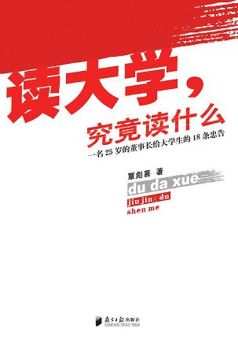

《读大学，究竟读什么》

总体观点
青年学者、创业者覃彪喜的畅销名作《读大学，究竟读什么》，是中文互联网时代针对中国大学生迷茫现状最具冲击力与颠覆性的成长批判书。
核心主张：大学文凭早已不再是包分配的铁饭碗，读大学的核心目的绝不是被动应付期末考试拿高分，而是重塑独立人格、建立自主学习能力并提前为残酷激烈的商业社会做好心理与技能储备。
全书以极其辛辣直白、毫不留情的真话笔触，全面剖析了专业冷热迷思、逃课辩证法、廉价兼职陷阱、考研盲从潮、求职简历潜规则与写字楼生存法则，打破了象牙塔的温室幻觉，为迷茫学子提供了极具实战价值的人生导航。
核心观点
-
1. 大学文凭不再是铁饭碗的保证：自学能力才是终生受用的核心资产
大学四年如果不培养自主获取全新知识、解决复杂问题的独立思考能力，哪怕名校毕业也会在职场竞争中迅速被淘汰。
例 ·计算机专业教材落后行业五年，优秀毕业生从不大课死背过时课本，而是通宵啃开源社区英文文档自学最新全栈框架。 -
2. 专业无冷热，人才分高下；不可一业不专，不可只专一业
迷信热门专业往往在毕业时遭遇行业过剩，真正抢手的人才是既在垂直领域有一技之长，又懂沟通写作与商业常识的复合型T型人才。
例 ·学历史哲学的冷门专业文科生，通过自学数据分析与新媒体运营，成为互联网大厂年薪几十万的稀缺战略运营专家。 -
3. 批判性审视平庸课堂：“不逃课的学生未必是好学生”
盲目全勤听毫无营养的水课死记硬背是生命的最大浪费；把有限时间投入到真正能增长见识的经典阅读、高阶竞赛与社会实践中才叫高效。
例 ·毅然翘掉老教授照本宣科念PPT的概论水课，去图书馆整整泡了三个月啃完十部经济学经典，思维格局脱胎换骨。 -
4. 警惕廉价勤工俭学的自我感动陷阱：不要为了蝇头微利出卖年轻的时间
发传单、端盘子等低端重复劳动不仅无法积累核心技能，反而消耗了提升认知的宝贵黄金时间；兼职必须追求高知识密度。
例 ·与其为了每小时十五块钱去快餐店机械洗碗端盘，不如零报酬去一家行业顶尖初创公司当助理，近距离观察老板如何谈业务与运营项目。 -
5. 考研盲从潮是不少人逃避就业压力的“安乐死”
缺乏清晰职业规划的盲目考研不过是将就业难题推迟三年；如果三年里没有实质性科研产出或技能突破，毕业时往往面临更尴尬的高不成低不就。
例 ·为了逃避找工作跟风考研三年连续落榜，身心俱疲且错过了校招应届生身份，眼看着当年直接就业的同班同学已晋升为部门主管。 -
6. 求职不是学术论文答辩，做人太厚道往往在博弈中吃暗亏
求职是一场精准的个人商业价值销售；简历必须用量化成果说话，面试必须展现对企业痛点的深刻洞察与不可替代性。
例 ·平庸求职者在简历上罗列“热爱工作吃苦耐劳”，聪明求职者直接摆出“大学期间运营公众号从零涨粉十万并变现二十万元”的铁证成果。
全书结构
-
一、读大学，究竟读什么？
直击大学教育现状与社会需求的巨大脱节，指出读大学核心读的是自学能力、独立人格与社会化心智，绝非混一张文凭纸。
例 ·无数新生进入大学后失去高中填鸭式考试目标便陷入沉迷游戏、通宵刷剧的空虚迷茫，作者开篇当头棒喝唤醒读者。 -
二、人生规划：三岔路口的抉择
指导大学生在大一及早制定四年进阶规划，在考研、就业、出国与考公的分岔路口算清机会成本，告别走一步看一步的被动。
例 ·展示一份将大学四年拆解为大一打底、大二考证与竞赛、大三高价值实习、大四秋招冲刺的目标倒推甘特图。 -
三、专业无冷热，学校无高低
破除热门专业的迷信与二本三本学校的自卑心魔，论证四年后的个人身价取决于大学期间自我投资的强度而非高考几张试卷。
例 ·热门国际贸易专业毕业生往往连基本报关单据都不会看，而冷门农学专业自学编程的同学却斩获顶级外企高薪Offer。 -
四、不可一业不专，不可只专一业
提出复合型“T型人才”培养法：在本专业有一技之长的纵向深度基础上，横向拓展商业嗅觉、英文流利度与文字表达力。
例 ·机械设计专业学生在精通CAD三维建模的同时，选修商务谈判并担任辩论队主辩，毕业后在工业外贸销售中如鱼得水。 -
五、不逃课的学生不是好学生
辩证阐述逃课哲学：不是为睡懒觉逃课，而是敢于从照本宣科的平庸水课中赎回时间，自主投入到高产出的核心学习中。
例 ·翘掉老教授念了二十年毫无更新的教材大课，把整整一个学期下午用来在实验室跟着年轻导师攻关国家级科研项目。 -
六、勤工俭学的辩证法
尖锐批判廉价重复劳动的勤工俭学，告诫贫困生算清时间账，放弃端盘子发传单，转向家教、技术开发等高智力兼职。
例 ·每天花四小时在校门口发传单赚三十块钱，不仅期末挂科还要补考，反而错失了在暑期进入正规大公司实习积累资历的机会。 -
七、做事不如做人，人脉决定成败
剖析大学校园里的真假人脉：人脉的本质是势均力敌的价值交换与人品认同，盲目谄媚混学生会不如自身先成为可靠的卓越者。
例 ·天天在各类酒局里称兄道弟加几百个微信好友，临到找工作内推时却发现没有一个人愿意冒信用风险为他写一封推荐信。 -
八、互联网：倚天剑与达摩克利斯之剑
指导大学生将互联网从吞噬注意力的娱乐黑洞转变为赋能自学的超级杠杆，善用公开课、专业论坛与信息检索改变命运。
例 ·宿舍室友整夜联机打网游虚度光阴，而主角在MOOC上免费修完斯坦福计算机核心课程并拿到优秀结业证书。 -
九、恋爱：花开堪折方须折
树立健康从容的大学恋爱观：恋爱是心智成熟的试金石与生活合伙人，既不该为了排遣寂寞盲目脱单，也不该把爱情当成提款机。
例 ·情侣两人互相监督备战托福与专业竞赛，把约会地点设在图书馆，携手申请到同一所顶尖名校的研究生奖学金。 -
十、性：上帝死了，众神在堕落
直面当代大学生的性观念与情感困惑，提倡负责任的性态度、知情同意底线与自我保护意识，拒绝轻佻放纵与身心伤害。
例 ·剖析校园意外怀孕引发的辍学与健康悲剧，告诫年轻人学会对自己的身体和伴侣的未来承担完全的成年人道德责任。 -
十一、考研：痛苦的安乐死
给狂热考研大军泼冷水，剖析逃避型考研的巨大机会成本，鼓励学子结合自身职业方向理性决策，切忌盲从随大流。
例 ·三本院校整班同学无论适不适合科研全员备战考研，导致大四几乎全部放弃秋招，初试放榜后全军覆没陷入惨烈就业断崖。 -
十二、留学：“海龟”变“海带”
剖析自费留学热潮中的镀金泡沫，指出花百万重金读野鸡大学回国只能沦为“海带”，唯有真才实学才能赢得国际竞争力。
例 ·为了镀金去国外读一年制水硕士，回国面试时英文口语结巴、专业技能毫无长进，开出的薪资期望连留学学费利息都难以覆盖。 -
十三、非统招：养卑照样处优
专为自考、成教、民办等非统招学历学生把脉，破除自卑阴影，指导他们凭借过硬的技术实力与情商在职场中绝地反击。
例 ·非统招自考大专生凭借在Github上的硬核开源项目与精湛实操代码，在技术面试中力压一众名校硕士破格被大厂录取。 -
十四、毕业：十面埋伏的陷阱
揭露毕业季黑中介骗局、三方协议霸王条款、档案户口派遣陷阱，为走出校门的毕业生筑牢法律与安全防线。
例 ·应届生因贪图高薪轻信无资质皮包公司，被诱骗签署扣留身份证的假培训贷协议，作者详细支招如何运用劳动仲裁维权。 -
十五、求职：做人不要太厚道
传授求职战场的进攻性策略：简历包装的艺术与虚假的界限、面试谈薪博弈技巧，不做逆来顺受的职场小绵羊。
例 ·求职时不卑不亢地询问公司的晋升通道与加班补贴计算方式，对不合规的试用期无薪要求果断说不，展现成熟职业风貌。 -
十六、骑一头能找千里马的驴
探讨第一份工作的选择智慧：“先就业再择业”的真正内涵是找一个能积累核心技能与人脉的跳板，绝非饥不择食摆烂。
例 ·去不了心仪的世界五百强总部，先去其核心外包服务商把业务流程摸透，两年后凭借熟门熟路成功跳槽进入甲方总部。 -
十七、写字楼政治：白领必修课
全景还原初入职场新人的生存指南：理解汇报层级、克制越级汇报冲动、分清站队分寸，从象牙塔学生快速蜕变为成熟白领。
例 ·新人学会凡事有交待、件件有着落、事事有回音，定期发邮件同步进展，短时间内赢得上司的绝对信任。 -
十八、创业：29岁以前做富翁
探讨大学生创业的冷酷现实与底层逻辑，告诫年轻人切忌仅凭热血盲目烧钱，提倡在职场摸爬滚打积累经验后再伺机出击。
例 ·大四学生借债三十万开咖啡馆三个月血本无归，反思唯有看懂供应链、现金流与真实客源需求，创业才有微薄胜算。